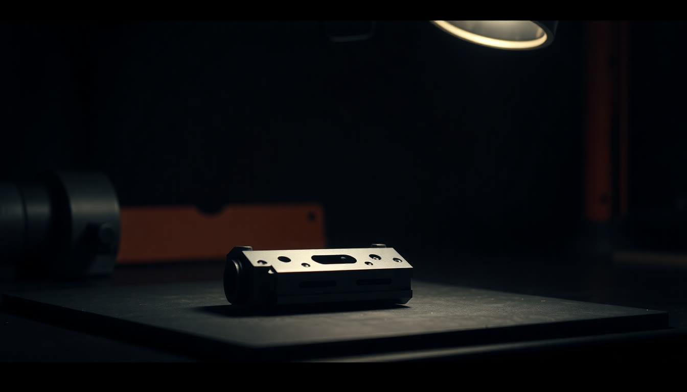

Промпт-инженерия:
как думать вместе с ИИ
Сегодня он начнёт понимать вас с первого раза.
Вы открыли чёрный ящик.
Осталось научиться говорить

Что вы успели за неполную неделю
Отчётов по домашке
Досье в памяти, он больше не спрашивает, кто вы. Кто не успел, догоняет, это нормально.
Сценариев в карте
Каждый получил свою карту применения, отсортированную по экономии времени.
Часов в неделю
Столько он пообещал вернуть. Цифры в отчётах группы совпали почти у всех.
Задача в работе
Не в теории, а на живом клиенте, живой таблице и живом протоколе.
Что унесёте сегодня

Без ТЗ
результат ХЗ
С ИИ оно действует буквально.
Разница видна с первой строки
ИИ не читает мысли.
Он читает то, что вы дали
Вода в ответе это не его характер. Это отражение того, сколько вы ему сказали.

«Иногда приходится
по пять раз переписывать»
Это потому, что первый запрос был на три строки, а всё остальное он додумывал сам.
Пять элементов, из которых
собирается любой рабочий запрос
Разбираем по одной букве
Минимум, который уже работает:
Роль + Задача + Формат
Когда на кону деньги, репутация или подпись живого человека, добавляйте контекст и ограничения. Пять минут на формулировку дешевле, чем разговор с недовольным клиентом.
Так выглядит промпт, после которого не переделывают
Шаблон, который лежит в шпаргалке
Берём и пользуемся сегодня
Те же пять букв, другая задача
Встречи и отчёт наверх
Пятнадцать готовых промптов лежат в шпаргалке
Соберите промпт по формуле
Пусть он спросит раньше,
чем начнёт писать
Пусть он спросит вас первым

Совет экспертов
в три хода
В домашке вы собирали совет и звали адвоката дьявола по отдельности. Сегодня сводим это в один разбор и добавляем ход, которого не было.
На вопрос «оцени решение» он отвечает усреднённо
Юрист
Видит процедуру и то, чем это кончится на бумаге.
Финансист
Видит следующий квартал и цену этого решения в деньгах.
Безопасник
Видит, где утечёт и где вы окажетесь виноваты.
Скептик
Видит, где вы себя обманываете. Обычно самый полезный из четырёх.
Первое сообщение · базовый состав, работает почти везде
Одна строка, которая переворачивает разбор
И часто именно эта роль ломает всю прежнюю логику.
Разбор по фактам, а не по вежливости
Отдельным ходом, а не заодно
Собирает всё в одну готовую версию
На выходе не «мнение нейросети», а протокол сомнений: список того, что стоит проверить до подписи.
Три вариации и пять ошибок
Роли выбраны наугад. Берите тех, кто в жизни действительно завернёт вашу бумагу.
Нет контекста. Пять экспертов без фактов дадут пять банальностей.
Больше семи ролей. Начинается каша, оптимум четыре или пять.
Все эксперты «за». Значит вы не заказали скептика.
Совет вызвали после решения. Ценность приёма только «до».
Прогоните свой ответ через пять ходов
Одна новость, четыре разных человека
Один текст, три читателя
Есть образец? Не описывайте его словами.
Разберите его на формулу
Обратный промптинг: готовый текст даёт шаблон со скобками, которым я пользуюсь всегда.

Десять сценариев, которые можно забрать сегодня
Картинка
Нравится фото или картинка: «опиши подробно и сделай промпт, чтобы получить похожую»
Удачное письмо
Письмо, после которого договорились, превращается в ваш постоянный шаблон
Коммерческое
КП, которое приняли: вытащить структуру и логику убеждения
Договор
Свой рабочий договор в скелет с полями, чтобы дальше собирать за минуту
Презентация
Чужая презентация, которая понравилась: забрать порядок слайдов и логику
Чужой стиль
Три-пять текстов автора, который вам нравится: забрать тон и приёмы
Сайт конкурента
Скриншот страницы: разобрать структуру и тексты, сделать так же под себя
Объявление
Объявление, на которое пишут: вытащить формулу и применить к своему
Отчёт
Отчёт, который приняли без правок: сделать из него постоянную форму
Ваш же голос
Свои удачные сообщения: вытащить собственный стиль и говорить им всегда
Копируем, вставляем свой образец
Достаньте шаблон из своего образца
Там, где есть расчёт,
заставьте его показать ход мысли
Расчёт цены и скидки. Выбор между поставщиками. Сравнение двух вариантов сделки. Сведение цифр из разных источников. Любой вопрос, где ответ это число, а не текст.
Заставьте его показать логику
Большая задача разваливается,
если просить её целиком
Вы видите план раньше результата и правите его, пока это дёшево. Ошибка на первом шаге не тянет за собой всю работу. И каждый кусок можно проверить, пока он ещё небольшой.
Первый ответ это
всегда черновик
Не начинайте новый чат и не переписывайте промпт заново: скажите словами, что не так, прямо здесь.
Один экран, который стоит сфотографировать
Пока вы не сказали, в каком виде,
он выбирает сам
По умолчанию он вам поддакивает
Он помнит не всё и не вечно
Модели подросли. Сверху легли три вещи
Описывайте результат
Раньше расписывали шаги. Теперь достаточно сказать, каким должен быть готовый результат и по какому признаку понятно, что он готов. Маршрут он выберет сам.
Самопроверка
«Прежде чем показать ответ, проверь его сам по своим же критериям и переделай, если не дотягивает». Та самая инструкция, которую вы вставили на первом занятии.
Одно указание один раз
Скажите чётко и один раз. Если повторить одно и то же трижды, он вцепится именно в это и потеряет остальное.
Пять ошибок, которые видно чаще всего
Правило одного круга

Один пример «как надо» сильнее,
чем три страницы объяснений
Второе работает лучше и занимает десять секунд.
Пять правил

Не пишите промпт.
Расскажите задачу голосом
Теперь формулу вы знаете, значит увидите, если он соберёт промпт мимо задачи. С этого момента можно работать только так.
Говорите как получится. Соберёт он
Наговорите задачу и ничего не пишите
Что унесли сегодня
Три захода по двадцать минут
Сегодня, пятница
Формула на трёх своих задачах. Плюс одно висящее решение прогоняем через совет экспертов в пять ходов.
Выходные
Голос и обратный промптинг: наговариваете задачу, а из своего удачного документа делаете многоразовый шаблон.
Понедельник
Совет экспертов в пять ходов на живом документе и два промпта из банка на ваш выбор.

Ассистенты.
Из чата: своя ИИ-команда
Дальше соберём из этого постоянных помощников, каждого под свой участок работы.
Принесите задачу, которую делаете каждую неделю руками
занятия 2